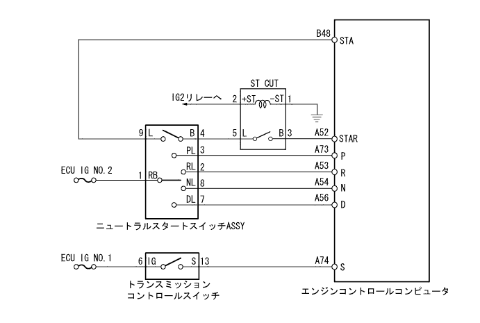
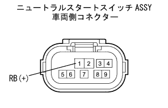
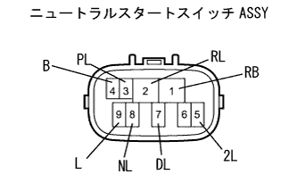
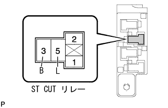
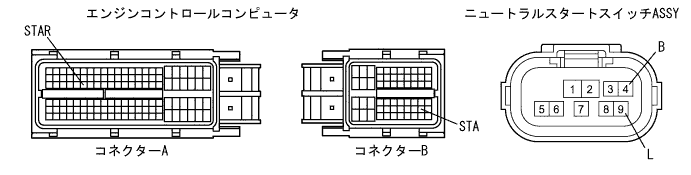
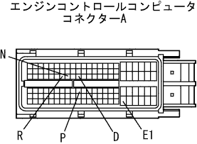
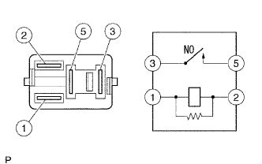
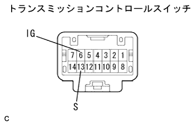
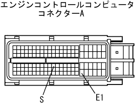

DTC P0705/C2 T/M Control Switch Malfunction |
| DTC No. | DTC Detection Conditions 1. Diagnosis conditions 2. Malfunction status 3. Malfunction duration 4. Other | Inspection Area |
|---|---|---|
| P0705/C2 |
|
|

| Step 1 | Read TaSCAN Data (Shift Position P, R, N, D Range) |
Using SST (TaSCAN), display the [ECU Data Monitor] screen according to the screen display, and check the computer data.
| Item Name [Symbol] | Item Description | Condition | Reference Value |
|---|---|---|---|
| Neutral Start SW [NSW] | Indicates P or N range | Shift lever N → R → P | ON→OFF→ON |
| Shift Position P Range [P] | Indicates P range | Shift lever P | ON |
| Shift Position R Range [R] | Indicates R range | Shift lever N → R | OFF→ON |
| Shift Position N Range [N] | Indicates N range | Shift lever N | ON |
| Shift Position D Range [D] | Indicates D range / M position | Shift lever N → D | OFF→ON |
| Result | Proceed to |
|---|---|
| NG | A |
| OK | B |
|
| ||||
| A | |
| Step 2 | Inspect Wire Harness and Connector (Power Source System) |
for reference. |
Disconnect the neutral start switch assembly connector.
Using SST (Toyota electrical tester), measure the voltage of the vehicle side connector terminals.
| Tester Connection (Terminal Name) | Condition | Standard |
|---|---|---|
| 1 (RB) - Body ground | IG ON | 11 to14V |
|
| ||||
| OK | |
| Step 3 | Inspect Neutral Start Switch Assembly |
 |
Using SST (Toyota electrical tester), measure the resistance between the terminals of the neutral start switch assembly.
| Tester Connection (Terminal Name) | Condition | Standard |
|---|---|---|
| 1(RB) - 3(PL) | Shift lever in P position | Below 1 Ω |
| 4(B) - 9(L) | Shift lever in P position | Below 1 Ω |
| 1(RB) - 2(RL) | Shift lever in R | Below 1 Ω |
| 1(RB) - 8(NL) | Shift lever in N position | Below 1 Ω |
| 4(B) - 9(L) | Shift lever in N position | Below 1 Ω |
| 1(RB) - 7(DL) | Shift lever in D position / M position | Below 1 Ω |
|
| ||||
| OK | |
| Step 4 | Inspect Wire Harness and Connector (Neutral Start Switch Assembly - Engine Control Computer) |
for reference.Remove the ST CUT relay from the holder.
 |
Using SST (diagnosis check wire), connect terminals 3 (B) and 5 (L) of the ST CUT relay holder.
Disconnect connector A and connector B of the engine control computer.
Using SST (Toyota electrical tester), measure the resistance between the engine control computer and the neutral start switch assembly vehicle side connector terminals. (For Terminals of ECU, see)

| Tester Connection (Terminal Name) | Condition | Standard |
|---|---|---|
| A52(STAR) - 4(B) | Always | Below 1 Ω |
| B48(STA) - 9(L) | Always | Below 1 Ω |
| A52 (STAR) and 4 (B) - Body ground | Always | 10k Ω or higher |
| B48 (STA) and 9 (L) - Body ground | Always | 10k Ω or higher |
Connect the neutral start switch assembly connector.
Turn IG ON.
 |
Using SST (Toyota electrical tester), measure the voltage between the terminals. (For Terminals of ECU, see)
| Tester Connection (Terminal Name) | Condition | Standard |
|---|---|---|
| A73(P) - A104(E1) | Shift lever in P position | 11 to 14V |
| A73(P) - A104(E1) | Shift lever not in P position | 0 to 1.5V |
| A53(R) - A104(E1) | Shift lever in R | 11 to 14V |
| A53(R) - A104(E1) | Shift lever in any position other than R | 0 to 1.5V |
| A54(N) - A104(E1) | Shift lever in N position | 11 to 14V |
| A54(N) - A104(E1) | Shift lever not in N position | 0 to 1.5V |
| A56(D) - A104(E1) | Shift lever in D position / M position | 11 to 14V |
| A56(D) - A104(E1) | Shift lever not in D position / M position | 0 to 1.5V |
|
| ||||
| OK | |
| Step 5 | Inspect Starter Cut Relay |
 |
Resistance Inspection
Using SST (Toyota electrical tester), inspect the resistance between the relay terminals.
| Tester Connection | Condition | Standard |
|---|---|---|
| 1 - 2 | 20°C | 130.4 to 230.8Ω |
| 3 - 5 | 20°C | 10k Ω or higher |
Using SST (Toyota electrical tester), measure the resistance between the connector terminals when battery voltage is applied between terminals 1 and 2 of the ST CUT relay.
| Tester Connection | Condition | Standard |
|---|---|---|
| 3 - 5 | Battery Voltage | Below 1 Ω |
| Result | Proceed to |
|---|---|
| NG | A |
| OK | B |
|
| ||||
| A | ||
| ||
| Step 6 | Read TaSCAN Data (Sport Mode Select SW) |
Using SST (TaSCAN), display the [ECU Data Monitor] screen according to the screen display, and check the computer data.
| Item Name [Symbol] | Item Description | Condition | Reference Value |
|---|---|---|---|
| Sport Mode Selection SW [SPRT] | Indicates shift lever in M position | Shift lever D position → M position | OFF→ON |
| Result | Proceed to |
|---|---|
| NG | A |
| OK | B |
|
| ||||
| A | |
| Step 7 | Inspect Shift Lock Control Unit Assembly (Transmission Control Switch) |
Disconnect the transmission control switch connector.
 |
Using SST (Toyota electrical tester), measure the resistance between the connector terminals.
| Tester Connection (Terminal Name) | Condition | Standard |
|---|---|---|
| 6(IG) - 13(S) | Shift lever in M position | Below 1 Ω |
| 6(IG) - 13(S) | Shift lever in any position other than M | 10k Ω or higher |
|
| ||||
| OK | |
| Step 8 | Inspect Wire Harness and Connector (Transmission Control Switch - Engine Control Computer) |
for reference.Disconnect connector A of the engine control computer.
 |
Using SST (Toyota electrical tester), measure the voltage between the terminals. (For Terminals of ECU, see)
| Tester Connection (Terminal Name) | Condition | Standard |
|---|---|---|
| A74(S) - A104(E1) | Shift lever in M position | 11 to 14V |
| A74(S) - A104(E1) | Shift lever in any position other than M | 0 to 1.5V |
|
| ||||
| OK | |
| Step 9 | Replace Engine Control Computer |
| NEXT | |
| Step 10 | TaSCAN (A/T / CVT Learned Value Initialization, G Sensor 0-point Learning and CVT Hydraulic Pressure Learning) |
| Replacement Parts |
|
Using SST (TaSCAN), perform A/T/CVT learned value initialization, G sensor 0 point learning and CVT hydraulic pressure learning.
for reference.Check the DTCs again. (see)
| NEXT | ||
| ||